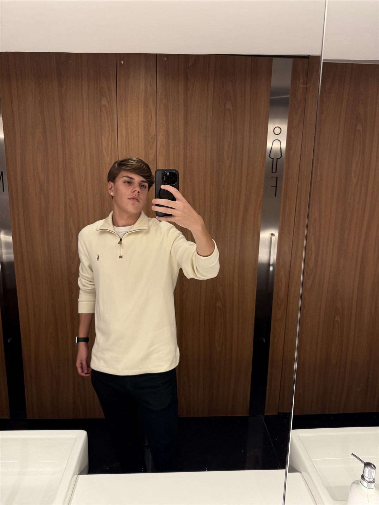

Áreas do Saber
Registros das disciplinas e dos aprendizados da formação geral.
Ver áreasMeu portfólio pessoal
Este espaço é meu portfólio de aprendizagem. Aqui registro minha trajetória, os conhecimentos que desenvolvo, meus projetos e os momentos importantes da vida escolar.
Curso: Técnico em Internet das Coisas (IoT)
Turma: 3º ano • Instituição: SENAC
Deslize para os lados ou use as setas para conhecer cada parte do portfólio.
Registros das disciplinas e dos aprendizados da formação geral.
Ver áreas
Projetos de IoT com ESP32, programação em Java, banco de dados e automação.
Ver projetos
Formação, habilidades, experiências e certificados.
Abrir currículo
Momentos especiais, atividades, eventos e trabalhos em equipe.
Ver memórias
A Mini Fábrica Inteligente, do desafio ao resultado.
Conhecer projetoCarrossel vertical: use as setas para percorrer as etapas.
Etapa 1
No Senac, aprendi sobre IoT (Internet das Coisas), que foi uma matéria nova e complicada no começo. Ao longo dos bimestres, fui evoluindo e aprendendo com as novas matérias e os trabalhos realizados.
Etapa 2
Logo no primeiro ano do Ensino Médio em IoT, aprendi muitas coisas importantes, como as normas da ABNT, Excel e Word em geral. Foram muitos ensinamentos do meu primeiro professor, Sthuwart De Assis, que utilizei em todas as matérias escolares e também nos anos seguintes.
Etapa 3
No segundo ano, tive mais dificuldades e enfrentei trabalhos bem mais complexos, lidando até mesmo com exames, entrevistas de emprego, automação e apresentações. Mas sei que, com todas as dificuldades que passei naquele ano, junto com a professora Rita de Cássia, me tornei um aluno de IoT muito mais completo e preparado para o mercado de trabalho, caso decidisse seguir nessa área.
Etapa 4
Já no meu último ano, com todos os aprendizados dos anos anteriores, aprendi a desenvolver projetos muito legais, como uma esteira que separa objetos por cores e até mesmo a criar este site que você está lendo. Graças ao meu professor Glauco Roberto e aos seus ensinamentos, consegui fazer várias coisas novas e entender muito mais sobre programação.
Meu objetivo é fazer Administração na Universidade Presbiteriana Mackenzie. Quero desenvolver habilidades como liderança, comunicação, negociação e gestão de negócios. Tenho interesse em aprender a administrar empresas, tomar decisões e entender melhor o mercado. No futuro, meu sonho é empreender e ter minha própria empresa, colocando em prática tudo o que aprender durante a faculdade.